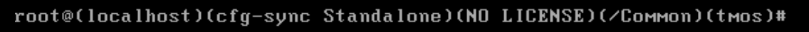

<!DOCTYPE html>
<html lang="zh">
<head>
	<meta charset="UTF-8">
	<meta http-equiv="X-UA-Compatible" content="IE=edge,chrome=1">
	<link rel="icon" href="../../../img/f5.svg" />
	<title>F5-LTM配置</title>
	<script src="../../../js/public/head.js"></script>
	<script type="text/javascript">
		window.onload = createNavigation(ltm);
	</script>
</head>
<body>
	<div class="container-fluid">
		<div id="divCommand">
			<script type="text/javascript">
				createInstruT0("设备初始化","i1");
					createInstruT1("底层初始化","i1-1");
						createInstruAllTopT1("默认用户名/密码：root/default，登录后需要更改密码");
						createInstruAllTopT1("不同模式的前缀很长，省略其它的提示信息");

						txt = `
							<span class="cmdInstruAllTopT1">通常模式</span>
							<div class="divConfigImgT1"></div>
							<br />
							<span class="cmdInstruAllTopT1">tmos模式</span>
							<div class="divConfigImgT1"></div>
							<br />
						`;
						document.writeln(txt);

						createInstruT2("默认方式","i1-1-1");
							createInstruT3("查看管理接口IP（先进行tmos模式，再通过命令查看，默认DHCP）");
								createInstruAllTopT3("先进行tmos模式，再通过命令查看");
								instruArr = new Array();
								instruArr[0]=createCmdSpan("… config # tmsh");
								instruArr[1]=createCmdSpan("… (tmos)# list /sys management-ip");
								createCmdInstruT3(instruArr,"f5");

							createInstruT3("查看管理接口默认网关");
								instruArr = null;
								instruArr = new Array();
								instruArr[0]=createCmdSpan("… (tmos)# list /sys management-route");
								createCmdInstruT3(instruArr,"f5");

						createInstruT2("CLI方式初始化","i1-1-2");
							createInstruT3("进入tmos模式");
								instruArr[0]=createCmdSpan("… config # tmsh");
								createCmdInstruT3(instruArr,"f5");

							createInstruT3("关闭管理接口DHCP功能");
								instruArr[0]=createCmdSpan("… (tmos)# modify sys global-settings mgmt-dhcp disabled");
								createCmdInstruT3(instruArr,"f5");

							createInstruT3("配置管理接口IP");
								instruArr[0]=createCmdSpan("… (tmos)# create /sys management-ip “10.1.1.201/24。");
								instruArr[1]=createCmdInstruSpan("“10.1.1.201/24。","管理接口IP/掩码");
								createCmdInstruT3(instruArr,"f5");

							createInstruT3("配置管理接口网关");
								instruArr[0]=createCmdSpan("… (tmos)# create /sys management-route default gateway “10.1.1.254。");
								instruArr[1]=createCmdInstruSpan("“10.1.1.254。","管理接口网关");
								createCmdInstruT3(instruArr,"f5");

							createInstruT3("保存配置");
								instruArr = null;
								instruArr = new Array();
								instruArr[0]=createCmdSpan("… (tmos)# save /sys config partitions all");
								createCmdInstruT3(instruArr,"f5");

						createInstruT2("图形化向导方式初始化","i1-1-3");
							instruArr = null;
							instruArr = new Array();
							instruArr[0]=createCmdSpan("… config # config");
							createCmdInstruT2(instruArr,"f5");

					createInstruT1("GUI初始化","i1-3");
						createConfigImgT1("ltm/i1_3$1~6");

				createInstruT0("基础网络配置","i11");
                    createInstruT1("配置DNS","i11-1");
                        createConfigImgT1("ltm/i11_1$1");

                    createInstruT1("配置NTP","i11-2");
                        createInstruT2("配置NTP","i11-2-1");
                            createConfigImgT2("ltm/i11_2_1$1");

                        createInstruT2("查看NTP状态","i11-2-2");
                            createConfigImgT2("ltm/i11_2_2$1");

					createInstruT1("Partition","i11-3");
                        createConfigImgT1("ltm/i11_3$1~5");


                createInstruT0("基础网络配置","i2");
					createInstruAllTopT0("网络配置类型于三层交换机（不支持将接口直接配置为三层）");

					createInstruT1("配置vlan","i2-1");
						createConfigImgT1("ltm/i2_1$1~3");

					createInstruT1("配置接口IP","i2-2");
						createConfigImgT1("ltm/i2_2$1~2");

					createInstruT1("配置路由","i2-3");
						createInstruT2("配置静态路由","i2-3-1");
							createConfigImgT2("ltm/i2_3_1$1~2");

						createInstruT2("配置OSPF","i2-3-2");
							createConfigImgT2("ltm/i2_3_2$1~4");

					createInstruT1("NAT","i2-4");
						createInstruT2("一对一静态NAT","i2-4-1");
							createConfigImgT2("ltm/i2_4_1$1~2");

						createInstruT2("PAT","i2-4-2");
                            createInstruT3("配置PAT地址池","i2-4-2-1");
								createConfigImgT3("ltm/i2_4_2_1$1~2");

                            createInstruT3("配置PAT地址池的idle-timeout","i2-4-2-2");
								createConfigImgT3("ltm/i2_4_2_2$1~2");

                            createInstruT3("配置PAT","i2-4-2-3");
                                createConfigImgT3("ltm/i2_4_2_3$1~2");

						createInstruT2("NAT相关系统配置","i2-4-3");
							createConfigImgT2("ltm/i2_4_3$1");

					createInstruT1("路由转发的virutal server","i2-5");
						createConfigImgT1("ltm/i2_5$1");

				createInstruT0("基本的入站负载均衡配置","i3");
					createInstruT1("配置node","i3-1");
						createInstruT2("配置默认的节点监控策略","i3-1-1");
							createConfigImgT2("ltm/i3_1_1$1");

						createInstruT2("配置节点","i3-1-2");
							createConfigImgT2("ltm/i3_1_2$1~2");

					createInstruT1("配置pool","i3-2");
						createConfigImgT1("ltm/i3_2$1~2");

					createInstruT1("配置virtual server","i3-3");
						createConfigImgT1("ltm/i3_3$1~3");

				createInstruT0("负载均衡方式相关配置","i8");
					createInstruT1("基于比例的最小连接（一般推荐方式）","i8-1");
						createConfigImgT1("ltm/i8_1$1~4");

					createInstruT1("pool member分组启用","i8-2");
						createConfigImgT1("ltm/i8_1$1");
						createConfigImgT1("ltm/i8_2$1~3");

                createInstruT0("健康检查策略","i9");
					createInstruT1("默认策略","i9-1");
                        createConfigImgT1("ltm/i9_1$1");

                    createInstruT1("创建自定义策略","i9-2");
                        createConfigImgT1("ltm/i9_2$1~6");

				createInstruT0("会话保持","i4");
					createInstruAllTopT0("virtual server中配置");

					createInstruT1("源IP地址","i4-1")
						createConfigImgT1("ltm/i4_1$1~2");

					createInstruT1("插入cookie","i4-2");
						createInstruT2("默认cookie","i4-2-1");
							createConfigImgT2("ltm/i4_1$1");
							createConfigImgT2("ltm/i4_2_1$1~2");

							createInstruAllTopT2("默认cookie如下");
							createConfigImgT2("ltm/i4_2_1$3");

						createInstruT2("自定义cookie","i4-2-2");
							createConfigImgT2("ltm/i4_2_2$1~3");

					createInstruT1("使用已存在的cookie（Cookie Hash）","i4-3");
						createConfigImgT1("ltm/i4_2_2$1");
						createConfigImgT1("ltm/i4_3$1");
						createConfigImgT1("ltm/i4_2_2$3");

				createInstruT0("应用优化","i10");
					createInstruT1("TCP优化","i10-1");
						createInstruT2("推荐profile选择","i10-1-1");
							createConfigImgT2("ltm/i10_1_1$1");

						createInstruT2("长连接修改","i10-1-2");
							createInstruAllTopT2("仅当存在长连接应用时修改，其它参数不推荐修改");
							createConfigImgT2("ltm/i10_1_2$1~2");

                    createInstruT1("HTTP优化","i10-2");
                        createConfigImgT1("ltm/i10_2$1~3");

				createInstruT0("HTTPS相关配置","i5");
					createInstruT1("证书相关配置","i5-1");
						createInstruT2("申请并导入个人证书","i5-1-1");
							createConfigImgT2("ltm/i5_1_1$1~6");

						createInstruT2("导入已存在的证书","i5-1-2");
							createConfigImgT2("ltm/i5_1_2$1~3");

						createInstruT2("个人证书关联对应的根证书","i5-1-3");
							createConfigImgT2("ltm/i5_1_3$1~2");

					createInstruT1("SSL卸载","i5-2");
						createInstruT2("创建SSL Client profile","i5-2-1");
							createConfigImgT2("ltm/i5_2_1$1~5");

						createInstruT2("修改virtual server相应配置","i5-2-2");
							createConfigImgT2("ltm/i5_2_2$1~2");

					createInstruT1("服务器侧SSL","i5-3");
						createInstruAllTopT1("先将客户端HTTPS请求卸载SSL，完成相应的处理，再与后端服务器建立HTTPS连接");
                        createInstruAllTopT1("使用HTTPS时，为了安全性，推荐使用域名添加，并校验服务器证书");
						createInstruT2("使用域名关联服务器","i5-3-1");

							createConfigImgT2("ltm/i5_3_1$1~3");

						createInstruT2("配置SSL服务器侧profile","i5-3-2");
							createInstruT3("仅校验服务器证书的profile","i5-3-2-1");
								createConfigImgT3("ltm/i5_3_2_1$1~2");

							createInstruT3("双向校验证书的profile","i5-3-2-2");
								createInstruAllTopT3("申请的证书类型为‘用户。，其它同Web证书申请");
								createConfigImgT3("ltm/i5_3_2_2$1~2");

						createInstruT2("修改virtual server相应配置","i5-3-3");
							createConfigImgT2("ltm/i5_3_3$1");

					createInstruT1("SSL重定向：<span style='color: #FFFFFF; font-size: 20px'>将http流量重定向到https</span>","i5-4");
						createInstruT2("配置重定向策略","i5-4-1");
							createInstruAllTopT2("重定向规则：");
							cmd = `
								tcl:https://[getfield [HTTP::host] : 1][HTTP::uri]
							`;
                            createLinuxTxtT2(cmd);
                            createConfigImgT2("ltm/i5_4_1$1~5");

						createInstruT2("关联策略到http的virtual server","i5-4-2");
							createConfigImgT2("ltm/i5_4_2$1~3");

                    createInstruT1("不解密https，只负载均衡流量","i5-5");
						createConfigImgT1("ltm/i5_5$1");

				// createInstruT0("WAF","i6");
				// 	createInstruT1("启用WAF功能","i6-1");
				// 		createConfigImgT1("ltm/i6_1$1");
				//
				// 	createInstruT1("配置并调用策略","i6-2");
				// 		createConfigImgT1("ltm/i6_2$1~3");

				createInstruT0("出站负载均衡配置","i6");
                    createInstruT1("配置出接口网关（Node形式）","i6-1");
                        createInstruAllTopT1("每个运营商配置一个Node");
                        createConfigImgT1("ltm/i6_1$1~3");

                    createInstruT1("配置出接口（Pool形式）","i6-2");
                        createInstruAllTopT1("每个运营商配置一个pool，pool中该运营商的网关高优先级，其它运营商低优先级");
						createInstruAllTopT1("最后配置一个默认pool，所有运营商的网关优先级相同，用于非出口运营商的地址");
                        createConfigImgT1("ltm/i6_2$1~5");


                    createInstruT1("配置地址组","i6-4");
                        createConfigImgT1("ltm/i6_4$1~3");

                    createInstruT1("配置用于选路的iRule","i6-5");

					createInstruT1("配置用于PAT的iRule","i6-6");
                        createInstruAllTopT1("如果选路出口的下一跳为61.128.21.254，则使用方尺出口地址做PAT");
						createInstruAllTopT1("因只有两个接口，所以出口另一个接口时，也使用其接口地址做PAT");
                        createInstruAllTopT1("如果需要使用地址池，则为 snatpool ISP1_Outbound_PAT_Pool");

                        cmd = `
							when LB_SELECTED {
								if { [IP::addr [LB::server addr] equals 61.128.21.254]} {
									snat automap
								}
								else {
									snat automap
								}
							}
							`;
							createLinuxTxtT1(cmd);

                    createInstruT1("配置vs，关联上述组件","i6-7");
                        createConfigImgT1("ltm/i6_7$1");

                createInstruT0("HA","i7");
					createInstruT1("配置HA相关接口","i7-1");
						createConfigImgT1("ltm/i7_1$1~6");

					createInstruT1("向HA组内添加设备","i7-2");
						createInstruAllTopT1("只需在组内一台设备配置，添加其它所有设备即可");
						createConfigImgT1("ltm/i7_2$1~4");

					createInstruT1("配置Failover（Sync-Only）设备组","i7-3");
						createConfigImgT1("ltm/i7_3$1~2");

                    createInstruT1("配置流量组","i7-6");
                        createConfigImgT1("ltm/i7_6$1~3");

                    createInstruT1("手动同步配置","i7-7");
                        createConfigImgT1("ltm/i7_7$1~2");

					createInstruT1("配置接口监控","i7-4");
						createInstruAllTopT1("默认情况下，接口故障不切换，需要手工配置");
						createInstruAllTopT1("接口监控不会通过Failover组配置同步，‘每台设备均需配置。");
						createConfigImgT1("ltm/i7_4$1~2");

					createInstruT1("配置浮动IP","i7-5");
						createConfigImgT1("ltm/i7_5$1");
			</script>
		</div>
	</div>
</body>
</html>